品牌


產品插圖


敘事與架構


宣傳


海報


家庭生活插畫
虛構家庭的生成插畫，不是真實家庭影像或產品畫面。選定 PNG 與完整提示詞分開保存，適合在其上另加可編輯文案。


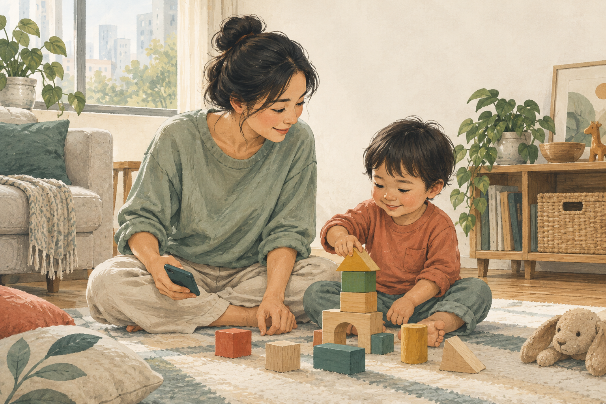

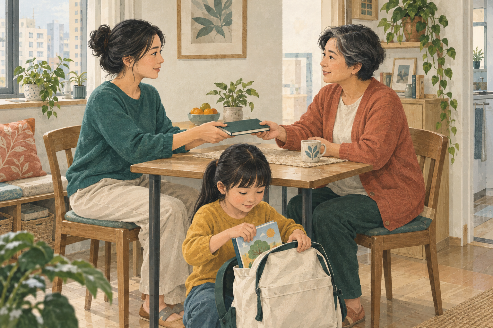

課後陪伴
6–10 歲孩子的家庭課後日常、成年陪伴及生活節奏主題；適合文章首圖與簡報橫幅。
1672 × 941 · images/after-school-routine.png

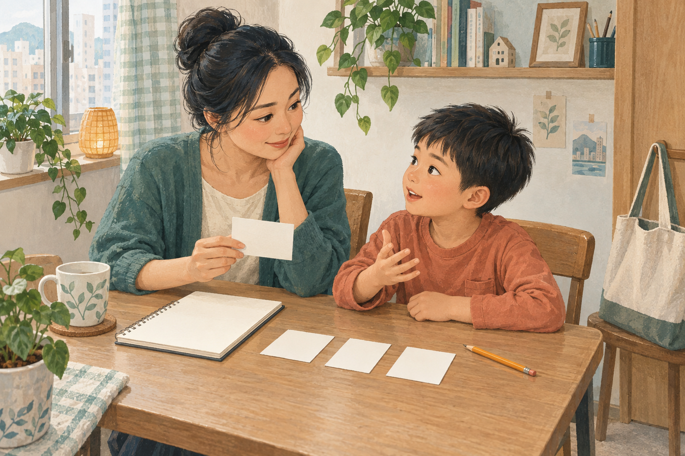
赴約前整理
赴約前整理筆記、回想生活觀察及準備待問事項的概念插圖；適合教學文章或流程簡報。
1536 × 1024 · images/visit-preparation.png

簡報 · 13 個清楚訊息
開啟 PowerPoint 成品 · 修改與重建方法
下列預覽由最終 PPTX 的文字、圖片及座標在瀏覽器重建，供目視檢查；未代替桌面 PowerPoint 開啟驗收。

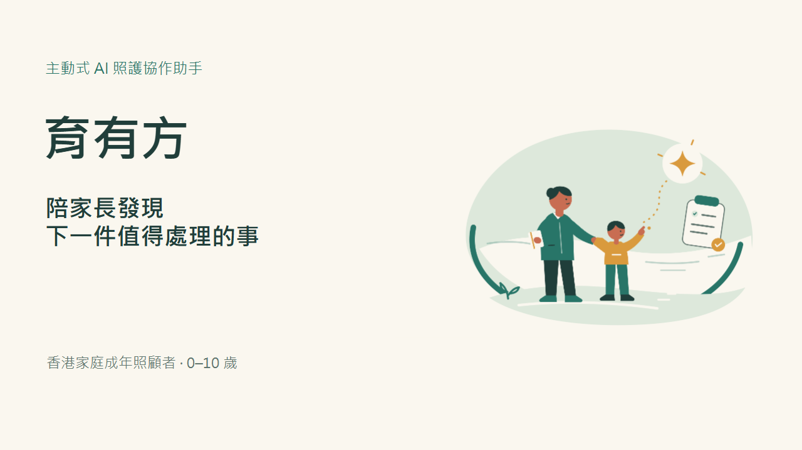
01 · cover

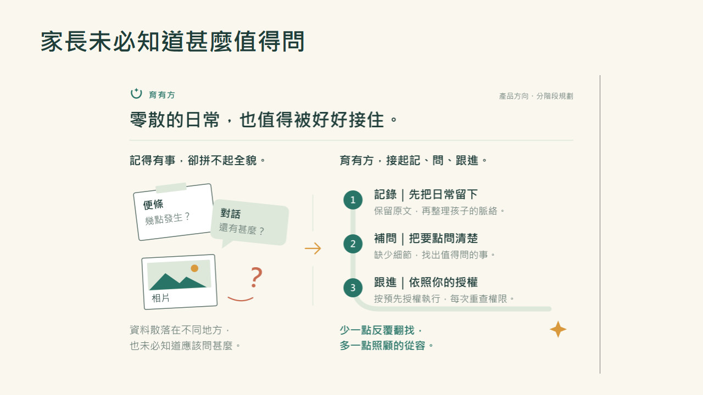
02 · problem

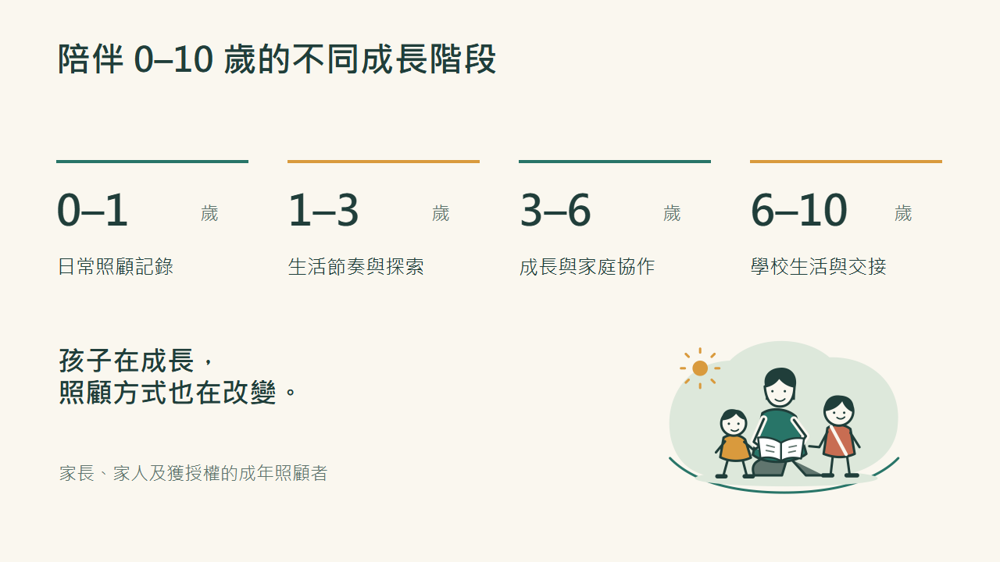
03 · audience

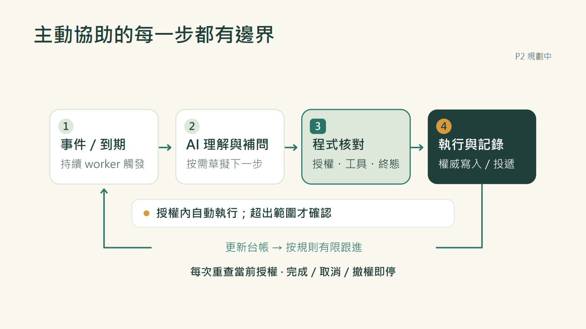
04 · agent

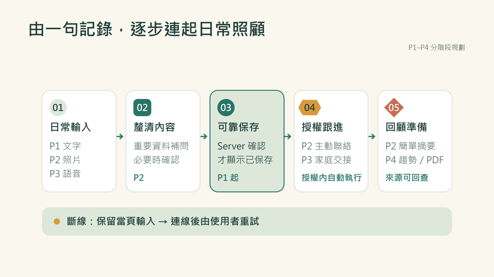
05 · journey

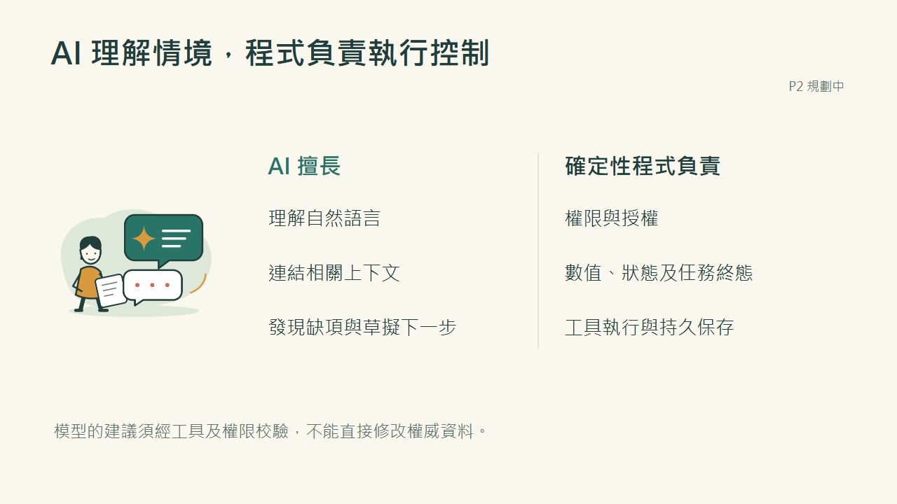
06 · responsibilities

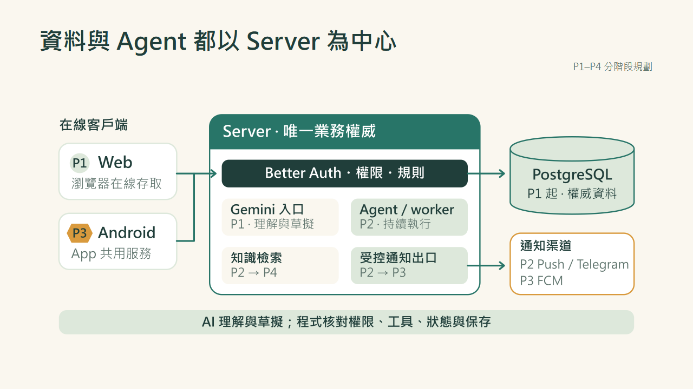
07 · architecture

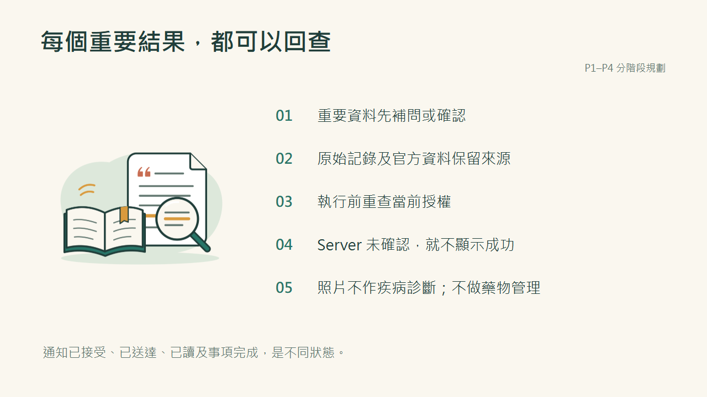
08 · safety

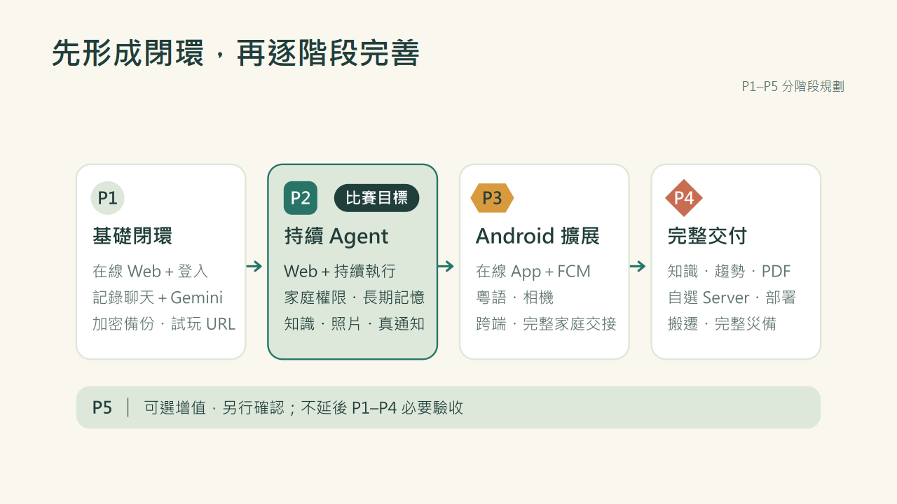
09 · roadmap

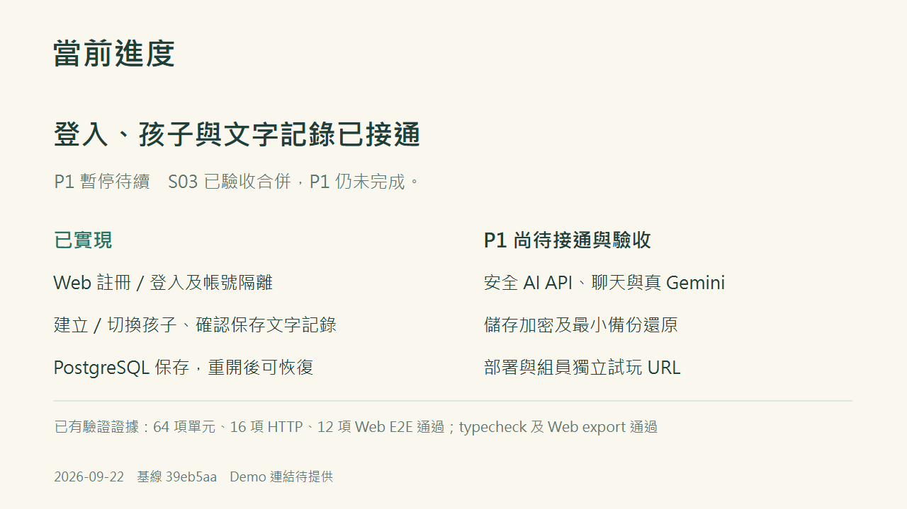
10 · status

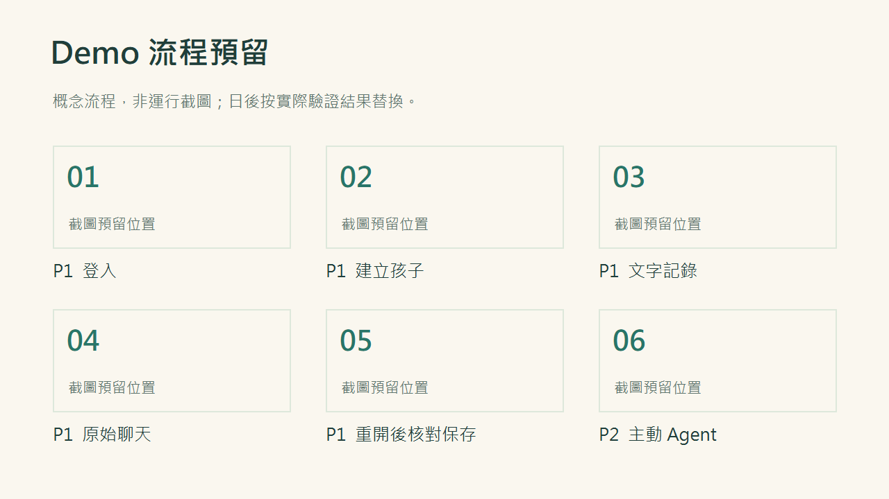
11 · demo

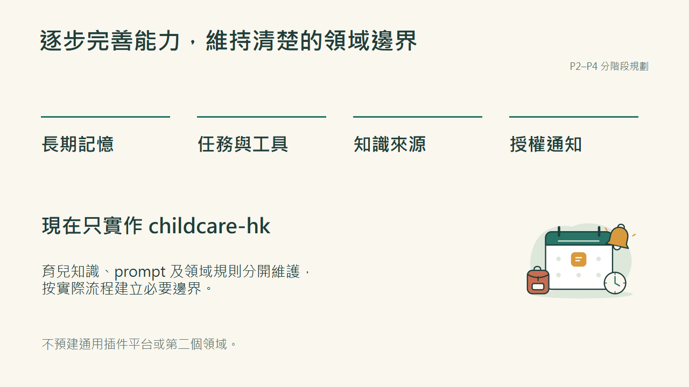
12 · growth

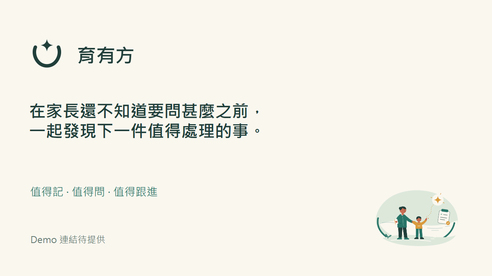